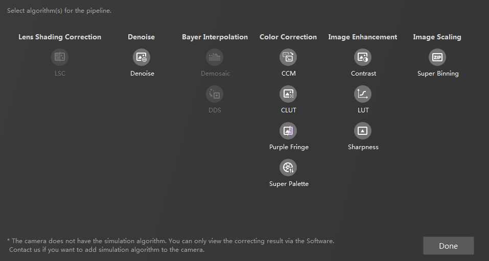

The pipeline of a camera is the image processing algorithm settings of the camera. You can import an existing pipeline configuration file or configure the pipeline manually.
Before importing or configuring the pipeline, you should connect to a camera or import a local image.
Click on the toolbar and select the pipeline configuration file (in XML format) on your PC.
When the file is imported, the pipeline area of the Software will show the algorithms included in the imported pipeline.
If a camera is configured with related algorithms, the pipeline will be imported to the Software automatically.
If you have configured a pipeline in the Software, when you connect to a camera with a pipeline, you will be asked if you want to replace it with that of the camera.
If the image format of the pipeline you configured in the Software is not the same with that of the camera you are connecting, the camera's pipeline will replace the pipeline in the Software.
Click Click to configure the pipeline in the pipeline area. Select the algorithms you need.
After selecting the algorithms, click Done and the selected ones will be shown in the pipeline area.
Some algorithms cannot be selected at the same time. Algorithms contradict to the selected ones are grayed out.
Algorithms that are not supported by the camera are marked with the simulation label. Simulation requires that the camera has the simulation algorithm.
If you need to edit the selection of algorithms, click Set PIPELINE in the pipeline area.

Figure 1 Select Algorithms